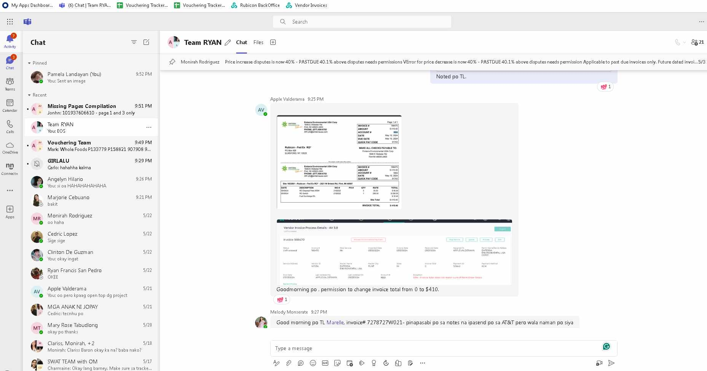
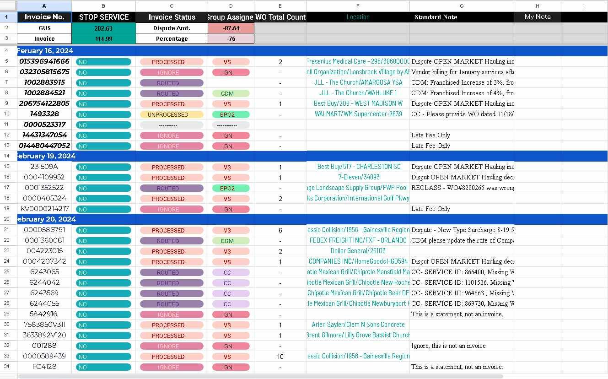

Bookkeeping & Accounting Support
Accounting Information Systems graduate with hands-on experience in accounts payable, accounts receivable, invoice processing, and bank reconciliation. Passionate about helping businesses maintain accurate financial records and efficient financial operations.
Detail-oriented Accounting Information Systems graduate with experience in financial documentation, invoice verification, accounts payable processing, and accounts receivable management. Skilled in reviewing billing records, managing daily financial transactions, and performing accurate bank reconciliations. Committed to supporting business financial operations through organized and reliable bookkeeping practices.
Invoice verification and processing.
Monitoring payments and collections.
Ensuring accurate financial documentation.
Matching company records with bank statements.
Preparing and organizing client agreements.
Maintaining organized financial records.
Bookkeeping, financial records, and transaction tracking.
Enterprise resource planning and financial data management.
Financial data visualization and reporting dashboards.
Financial analysis, reconciliation, and spreadsheet reporting.
Organizing financial data and maintaining records.
Professional communication and document coordination.
Financial documentation and report preparation.
Due to client confidentiality agreements, full financial documents cannot be publicly shared. The screenshots below are partial samples demonstrating the type of accounting and financial documentation work I handled while working as a Vouchering Analyst.

Reviewed vendor invoices to verify billing details, service descriptions, and compliance with company records before processing for payment.
Confidential information and company data have been hidden for privacy.

Maintained and monitored invoice status using internal spreadsheets to track processed, routed, disputed, and ignored invoices across multiple vendors.
Spreadsheet layout shown is a simplified view for portfolio purposes only.
Dr. Yanga's Colleges Inc.
2024 GraduateFocused on financial systems, accounting processes, financial reporting, and business information management. Developed strong analytical and bookkeeping skills for real-world financial operations.
I am currently open to bookkeeping and accounting support opportunities.
gwynethaira07@gmail.com
+63 951 905 4649
San Vicente, Santa Maria, Bulacan